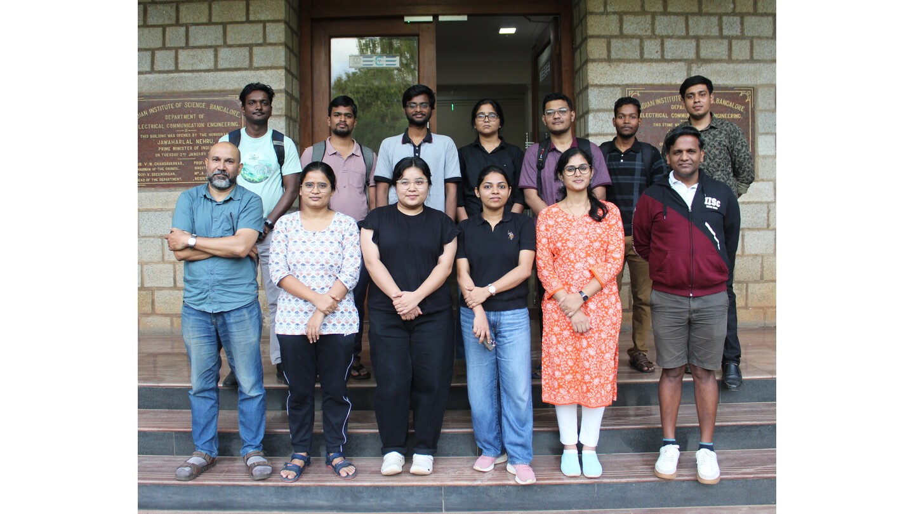

Network Seminar Series 2025

CNI Fellows 2024-25


11 Mar 2025 | Network in Code Hackathon 2025CNI is organising Network in Code Hackathon 2025 |
29 Nov 2024 | IISc-IBM AI Day on 04-Dec-2024CNI is organising the IISc-IBM AI Day on December 04, 2024 |
16 Apr 2024 | eBPF Day recordings on CNI YouTube channeleBPF Day video recordings are released on CNI's YouTube channel |
01 Mar 2024 | eBPF Day India on 16-Mar-2024CNI is organising the first eBPF day on March 16, 2024 |
We are racing towards a connected world where every individual and device contribute to and benefit from the network. However, our data collection surpasses our ability to extract valuable knowledge. To achieve networked intelligence, we need a holistic approach involving real-time sensing, communication, analytics, and more. The centre aims to develop next-gen networking solutions for smart cities, IoT, data exchanges, and society's benefit.